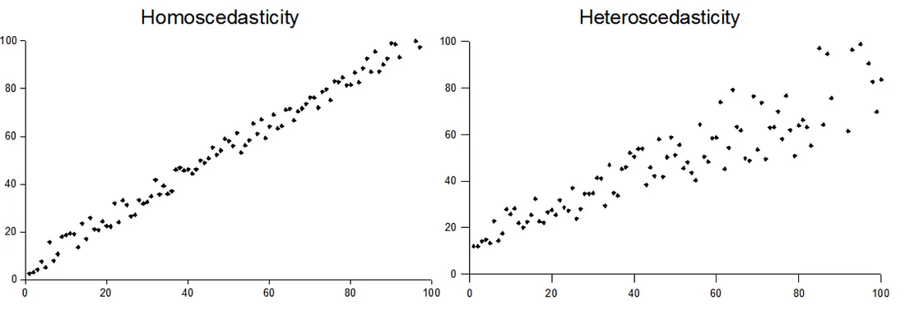
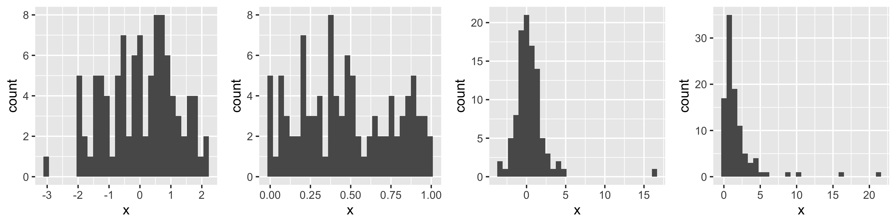
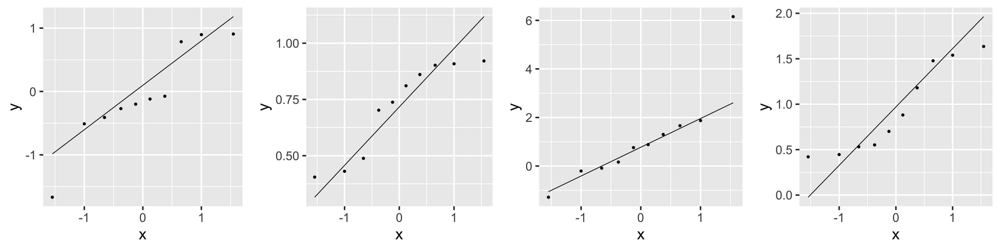
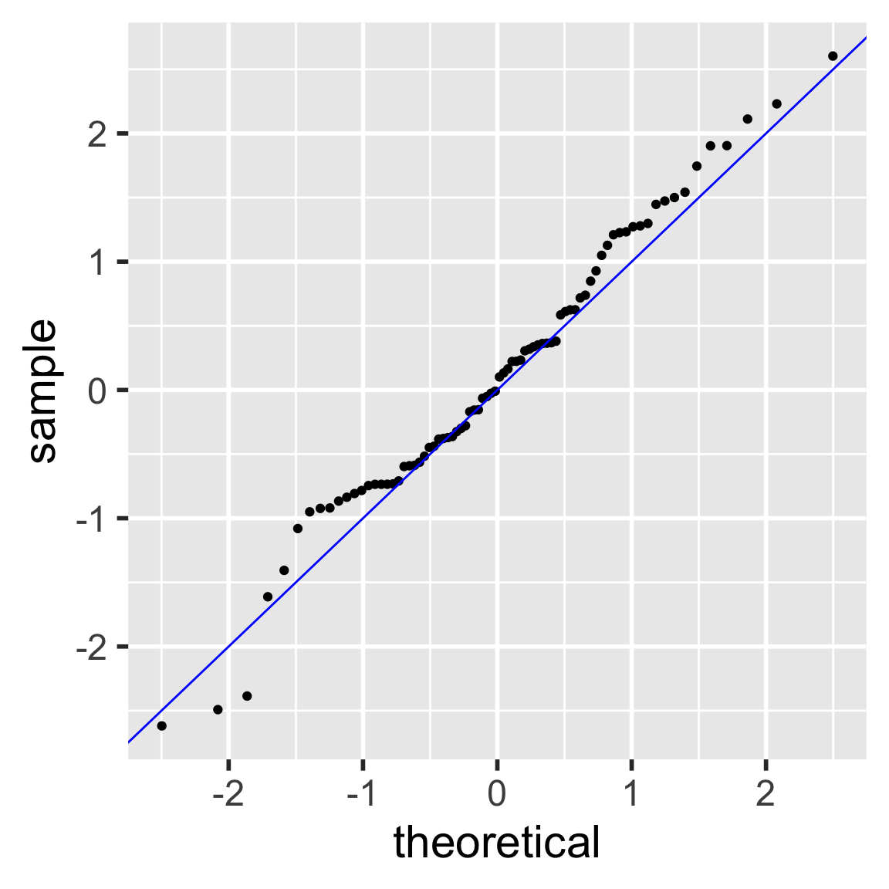

| term | estimate | std.error | statistic | p.value |
|---|---|---|---|---|
| (Intercept) | 50.93 | 2.66 | 19.14 | 0.00 |
| female_literacy_rate_2011 | 0.23 | 0.03 | 7.38 | 0.00 |
SLR: Model Evaluation and Diagnostics
Week 4
Let’s remind ourselves of the model that we have been working with
We have been looking at the association between life expectancy and female literacy rate
We used OLS to find the coefficient estimates of our best-fit line
\[Y = \beta_0 + \beta_1 X + \epsilon\]
Rows: 188 Columns: 3
── Column specification ────────────────────────────────────────────────────────
Delimiter: ","
chr (1): country
dbl (2): life_expectancy_years_2011, female_literacy_rate_2011
ℹ Use `spec()` to retrieve the full column specification for this data.
ℹ Specify the column types or set `show_col_types = FALSE` to quiet this message.Warning: Using `size` aesthetic for lines was deprecated in ggplot2 3.4.0.
ℹ Please use `linewidth` instead.`geom_smooth()` using formula = 'y ~ x'Warning: Removed 108 rows containing non-finite values (`stat_smooth()`).Warning: Removed 108 rows containing missing values (`geom_point()`).
Our residuals will help us a lot in our diagnostics!
The residuals \(\widehat\epsilon_i\) are the vertical distances between
- the observed data \((X_i, Y_i)\)
- the fitted values (regression line) \(\widehat{Y}_i = \widehat\beta_0 + \widehat\beta_1 X_i\)
\[ \widehat\epsilon_i =Y_i - \widehat{Y}_i \text{, for } i=1, 2, ..., n \]

Learning Objectives
- Describe the model assumptions made in linear regression using ordinary least squares
Determine if the relationship between our sampled X and Y is linear
Use QQ plots to determine if our fitted model holds the normality assumption
Use residual plots to determine if our fitted model holds the equality of variance assumption
Least-squares model assumptions: LINE
These are the model assumptions made in ordinary least squares:
[L] Linearity of relationship between variables
[I] Independence of the \(Y\) values
[N] Normality of the \(Y\)’s given \(X\) (residuals)
[E] Equality of variance of the residuals (homoscedasticity)
L: Linearity
- The relationship between the variables is linear (a straight line):
- The mean value of \(Y\) given \(X\), \(\mu_{y|x}\) or \(E[Y|X]\), is a straight-line function of \(X\)
\[\mu_{y|x} = \beta_0 + \beta_1 \cdot X\]
Warning in geom_point(size = 3, se = FALSE): Ignoring unknown parameters: `se``geom_smooth()` using formula = 'y ~ x'Warning: Removed 108 rows containing non-finite values (`stat_smooth()`).`geom_smooth()` using method = 'loess' and formula = 'y ~ x'Warning: Removed 108 rows containing non-finite values (`stat_smooth()`).Warning: Removed 108 rows containing missing values (`geom_point()`).
I: Independence of observations
The \(Y\)-values are statistically independent of one another
Examples of when they are not independent, include
repeated measures (such as baseline, 3 months, 6 months)
data from clusters, such as different hospitals or families
This condition is checked by reviewing the study design and not by inspecting the data
- How to analyze data using regression models when the \(Y\)-values are not independent is covered in BSTA 519 (Longitudinal data)
Poll Everywhere Question 1
N: Normality
- For any fixed value of \(X\), \(Y\) has normal distribution.
- Note: This is not about \(Y\) alone, but \(Y|X\)
- Equivalently, the measurement (random) errors \(\epsilon_i\) ’s normally distributed
- This is more often what we check

E: Equality of variance of the residuals
The variance of \(Y\) given \(X\) (\(\sigma_{Y|X}^2\)), is the same for any \(X\)
- We use just \(\sigma^2\) to denote the common variance
This is also called homoscedasticity

Summary of LINE model assumptions
- \(Y\) values are independent (check study design!)
The distribution of \(Y\) given \(X\) is
- normal
- with mean \(\mu_{y|x} = \beta_0 + \beta_1 \cdot X\)
- and common variance \(\sigma^2\)
This means that the residuals are
- normal
- with mean = 0
- and common variance \(\sigma^2\)
How do we determine if our model follows the LINE assumptions?
[L] Linearity of relationship between variables
Check if there is a linear relationship between the mean response (Y) and the explanatory variable (X)
[I] Independence of the \(Y\) values
Check that the observations are independent
[N] Normality of the \(Y\)’s given \(X\) (residuals)
Check that the responses (at each level X) are normally distributed
- Usually measured through the residuals
[E] Equality of variance of the residuals (homoscedasticity)
Check that the variance (or standard deviation) of the responses is equal for all levels of X
- Usually measured through the residuals
L: Linearity of relationship between variables
Is the association between the variables linear?
- Diagnostic tool: Scatterplot of \(X\) vs. \(Y\)
Warning in geom_point(size = 3, se = FALSE): Ignoring unknown parameters: `se``geom_smooth()` using formula = 'y ~ x'Warning: Removed 108 rows containing non-finite values (`stat_smooth()`).`geom_smooth()` using method = 'loess' and formula = 'y ~ x'Warning: Removed 108 rows containing non-finite values (`stat_smooth()`).Warning: Removed 108 rows containing missing values (`geom_point()`).
Poll Everywhere Question 2
I: Independence of the residuals (\(Y\) values)
- Are the data points independent of each other?
- Diagnostic tool: reviewing the study design and not by inspecting the data
N: Normality of the residuals
- We need to check if the errors/residuals (\(\epsilon_i\)’s) are normally distributed
Diagnostic tools:
Distribution plots of residuals
QQ plots of residuals
N: Extract model’s residuals in R
- First extract the residuals’ values from the model output using the
augment()function from thebroompackage. - Get a tibble with the orginal data, as well as the residuals and some other important values.
model1 <- lm(life_expectancy_years_2011 ~ female_literacy_rate_2011,
data = gapm)
aug1 <- augment(model1)
glimpse(aug1)Rows: 80
Columns: 9
$ .rownames <chr> "1", "2", "5", "6", "7", "8", "14", "22", "…
$ life_expectancy_years_2011 <dbl> 56.7, 76.7, 60.9, 76.9, 76.0, 73.8, 71.0, 7…
$ female_literacy_rate_2011 <dbl> 13.0, 95.7, 58.6, 99.4, 97.9, 99.5, 53.4, 9…
$ .fitted <dbl> 53.94643, 73.14897, 64.53453, 74.00809, 73.…
$ .resid <dbl> 2.7535654, 3.5510294, -3.6345319, 2.8919074…
$ .hat <dbl> 0.13628996, 0.01768176, 0.02645854, 0.02077…
$ .sigma <dbl> 6.172684, 6.168414, 6.167643, 6.172935, 6.1…
$ .cooksd <dbl> 1.835891e-02, 3.062372e-03, 4.887448e-03, 2…
$ .std.resid <dbl> 0.48238134, 0.58332052, -0.59972251, 0.4757…N: Check normality with “usual” distribution plots
Note that below I save each figure as an object, and then combine them together in one row of output using grid.arrange() from the gridExtra package
hist1 <- ggplot(aug1, aes(x = .resid)) + geom_histogram()
density1 <- ggplot(aug1, aes(x = .resid)) + geom_density()
box1 <- ggplot(aug1, aes(x = .resid)) + geom_boxplot()
grid.arrange(hist1, density1, box1, nrow = 1)`stat_bin()` using `bins = 30`. Pick better value with `binwidth`.
N: Normal QQ plots (QQ = quantile-quantile)
- It can be tricky to eyeball with a histogram or density plot whether the residuals are normal or not
- QQ plots are often used to help with this
- Vertical axis: data quantiles
- data points are sorted in order and
- assigned quantiles based on how many data points there are
- Horizontal axis: theoretical quantiles
- mean and standard deviation (SD) calculated from the data points
- theoretical quantiles are calculated for each point, assuming the data are modeled by a normal distribution with the mean and SD of the data
- Data are approximately normal if points fall on a line.

N: Examples of Normal QQ plots (from \(n=100\) observations)
Normal
Uniform
T
Skewed
`stat_bin()` using `bins = 30`. Pick better value with `binwidth`.
`stat_bin()` using `bins = 30`. Pick better value with `binwidth`.
`stat_bin()` using `bins = 30`. Pick better value with `binwidth`.
`stat_bin()` using `bins = 30`. Pick better value with `binwidth`.

N: Examples of Normal QQ plots (from \(n=10\) observations)
Normal
Uniform
T
Skewed
`stat_bin()` using `bins = 30`. Pick better value with `binwidth`.
`stat_bin()` using `bins = 30`. Pick better value with `binwidth`.
`stat_bin()` using `bins = 30`. Pick better value with `binwidth`.
`stat_bin()` using `bins = 30`. Pick better value with `binwidth`.

N: Examples of Normal QQ plots (from \(n=1000\) observations)
Normal
Uniform
T
Skewed
`stat_bin()` using `bins = 30`. Pick better value with `binwidth`.
`stat_bin()` using `bins = 30`. Pick better value with `binwidth`.
`stat_bin()` using `bins = 30`. Pick better value with `binwidth`.
`stat_bin()` using `bins = 30`. Pick better value with `binwidth`.

N: We can compare the QQ plots: model vs. theoretical
- Residuals from Life Expectancy vs. Female Literacy Rate Regression
ggplot(aug1,
aes(sample = .resid)) +
stat_qq() +
stat_qq_line() 
- Simulated QQ plot of Normal Residuals with \(n = 80\)
ggplot() +
stat_qq(aes(
sample = rnorm(80))) +
geom_abline(
intercept = 0, slope = 1,
color = "blue")
N: Shapiro-Wilk Test of Normality
E: Equality of variance of the residuals
- Homoscedasticity
- Diagnostic tool: residual plot

E: Residual plot
- \(x\) = explanatory variable from regression model
- (or the fitted values for a multiple regression)
- \(y\) = residuals from regression model
names(aug1)[1] ".rownames" "life_expectancy_years_2011"
[3] "female_literacy_rate_2011" ".fitted"
[5] ".resid" ".hat"
[7] ".sigma" ".cooksd"
[9] ".std.resid" ggplot(aug1,
aes(x = female_literacy_rate_2011,
y = .resid)) +
geom_point() +
geom_abline(
intercept = 0,
slope = 0,
color = "orange") +
labs(title = "Residual plot")
E: Equality of variance of the residuals (Homoscedasticity)
- The variance or, equivalently, the standard deviation of the responses is equal for all values of x.
- This is called homoskedasticity (top row)
- If there is heteroskedasticity (bottom row), then the assumption is not met.

Summary of the assumptions and their diagnostic tool
| A ssumption | What needs to hold? | Diagnostic tool |
|---|---|---|
| Linearity |
|
|
| Ind ependence |
|
|
| Normality |
|
|
| Equality of variance |
|
|